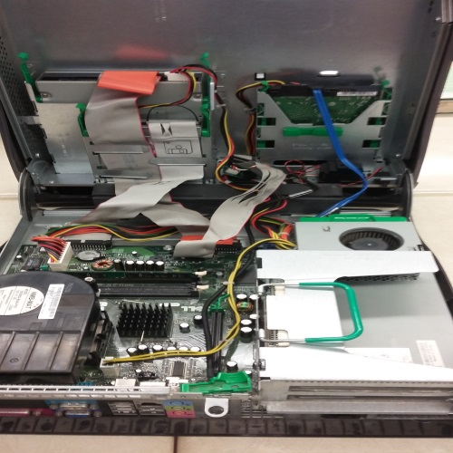
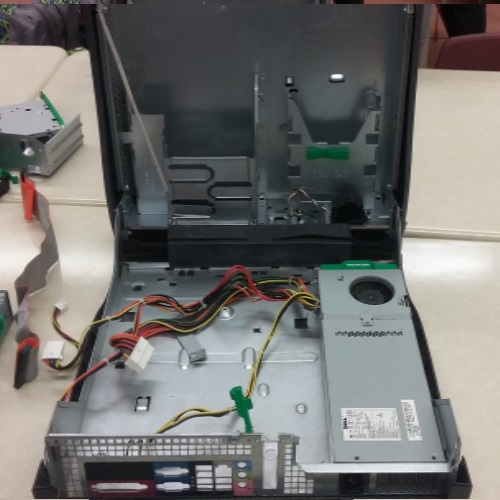
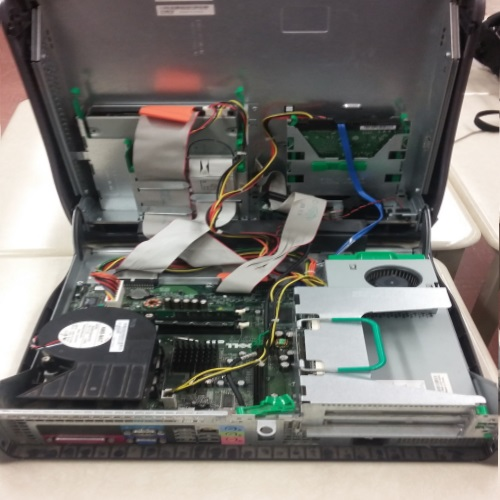

Hello and welcome! This is a website composed from the exploration team that includes: Kavithan, Lucy, Anish and Jimmy. Our tasks was to adopt a lonely computer and explore the various parts of hardware inside. We then identified and labeled the parts and recorded our findings. Afterwards, we as a team rebuilt the computer into its original state and put all its pieces where they belonged. This website will inform you about what we learned and what pieces we found in that unused computer. We have provided a description of what that piece of hardware is and what its purpose is. Hopefully you will learn how each of the pieces interact and work in order for computers operate today.
First we had to adopt a computer that was lying on the edges of the classroom just collecting dust and taking up space. With help from a screwdriver tool set, we were able to open up the computer case and take a first look at the hardware. Some of the pieces we recongnized, others we had no clue. Gradually as we progressed in our disassembly, we understood which piece did what. Here's a picture of the case, before we took anything out.
After a long period of taking apart the computer, we finally took everything out and only the casing remained, except the power supply that was impossible to take out without having to damage the case. We recorded each piece of hardware by taking pictures. This is what the computer looks like with all the hardware is taken out except the impossible power supply and what the computer looked like when we reassembled it. As you can see, they look the same for the most part.
 To learn more about the indivdual parts.